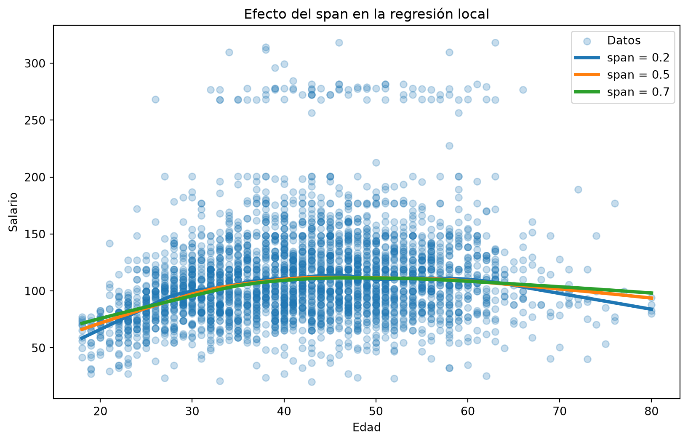
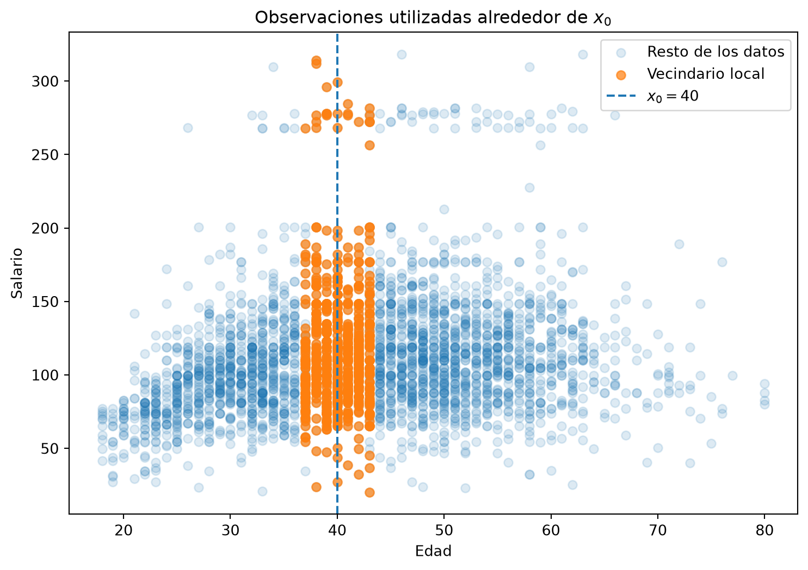
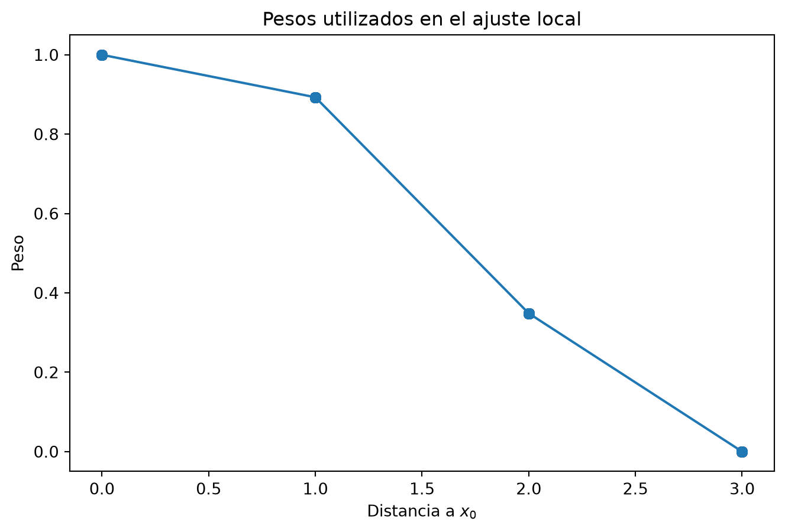
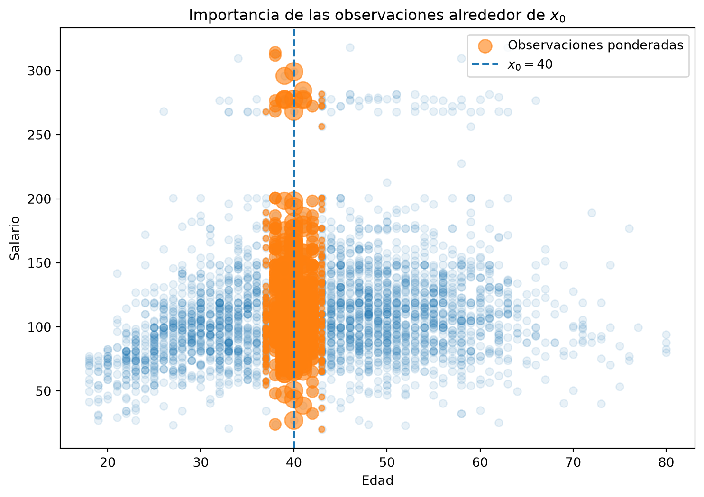
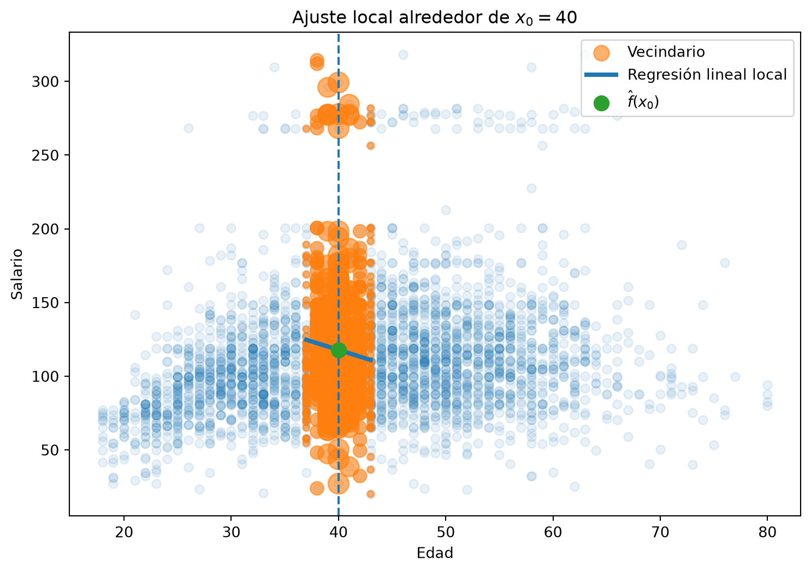
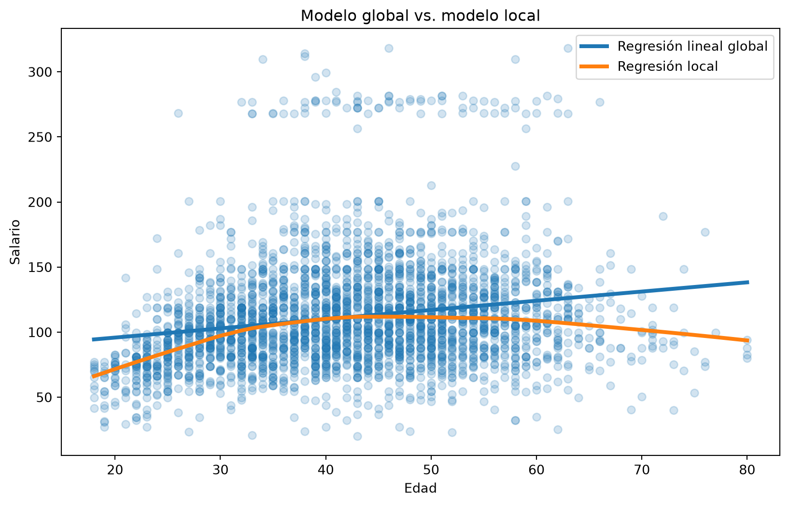
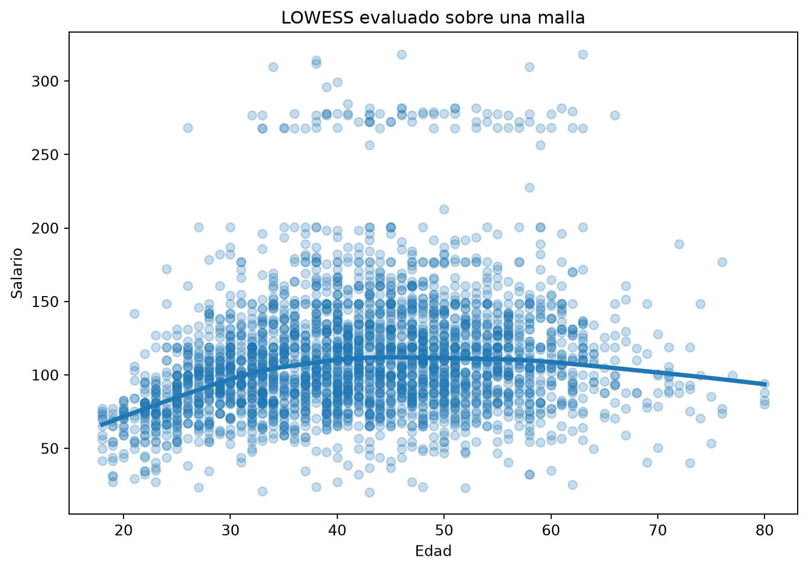
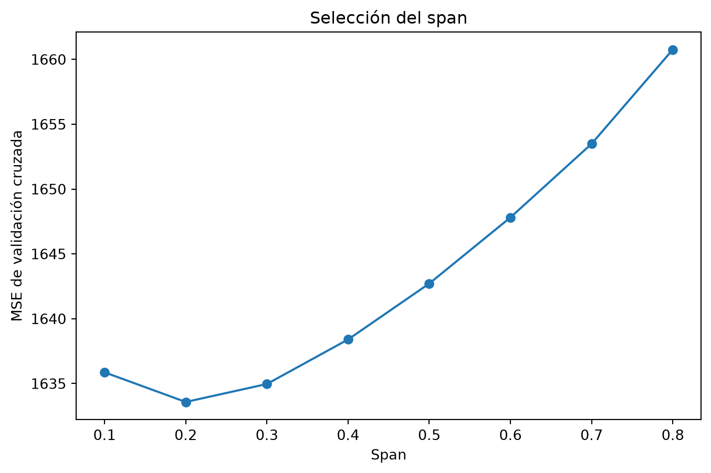

Código
import numpy as np
import pandas as pd
import matplotlib.pyplot as plt
import statsmodels.api as sm
from ISLP import load_dataEn las secciones anteriores hemos estudiado diferentes estrategias para modelar relaciones no lineales.
Por ejemplo:
En esta práctica estudiaremos una estrategia diferente: la regresión local.
La idea fundamental es sencilla:
Para estimar la respuesta en un punto \(x_0\), utilizamos principalmente las observaciones que se encuentran cerca de \(x_0\).
Esto significa que no construiremos una única ecuación global para todo el conjunto de datos. En su lugar, realizaremos pequeños ajustes locales en diferentes regiones del dominio.
Utilizaremos nuevamente el conjunto de datos Wage.
import numpy as np
import pandas as pd
import matplotlib.pyplot as plt
import statsmodels.api as sm
from ISLP import load_dataCargamos los datos.
Wage = load_data("Wage")Podemos revisar las primeras observaciones.
Wage.head()| year | age | maritl | race | education | region | jobclass | health | health_ins | logwage | wage | |
|---|---|---|---|---|---|---|---|---|---|---|---|
| 0 | 2006 | 18 | 1. Never Married | 1. White | 1. < HS Grad | 2. Middle Atlantic | 1. Industrial | 1. <=Good | 2. No | 4.318063 | 75.043154 |
| 1 | 2004 | 24 | 1. Never Married | 1. White | 4. College Grad | 2. Middle Atlantic | 2. Information | 2. >=Very Good | 2. No | 4.255273 | 70.476020 |
| 2 | 2003 | 45 | 2. Married | 1. White | 3. Some College | 2. Middle Atlantic | 1. Industrial | 1. <=Good | 1. Yes | 4.875061 | 130.982177 |
| 3 | 2003 | 43 | 2. Married | 3. Asian | 4. College Grad | 2. Middle Atlantic | 2. Information | 2. >=Very Good | 1. Yes | 5.041393 | 154.685293 |
| 4 | 2005 | 50 | 4. Divorced | 1. White | 2. HS Grad | 2. Middle Atlantic | 2. Information | 1. <=Good | 1. Yes | 4.318063 | 75.043154 |
Nos concentraremos en dos variables:
age: edad del individuo;wage: salario.age = Wage["age"]
wage = Wage["wage"]Antes de ajustar cualquier modelo, observemos la relación entre edad y salario.
plt.figure(figsize=(9, 6))
plt.scatter(
age,
wage,
alpha=0.4
)
plt.xlabel("Edad")
plt.ylabel("Salario")
plt.title("Relación entre edad y salario")
plt.show()Supongamos que queremos estimar el salario esperado para una edad particular \(x_0\).
En lugar de utilizar todas las observaciones con la misma importancia, podemos:
En el caso de una regresión lineal local, buscamos coeficientes \(\beta_0\) y \(\beta_1\) que minimicen
\[ \sum_{i=1}^{n} K_{i0} \left( y_i-\beta_0-\beta_1x_i \right)^2, \]
donde
\[ K_{i0}=K(x_i,x_0) \]
representa el peso de la observación \(i\) cuando queremos realizar una predicción en \(x_0\).
Las observaciones cercanas reciben pesos grandes y las observaciones alejadas reciben pesos pequeños o incluso cero.
Una vez estimados los coeficientes, la predicción es
\[ \hat f(x_0) = \hat\beta_0+\hat\beta_1x_0. \]
Para construir una curva completa, repetimos este procedimiento para muchos valores de \(x_0\).
statsmodels proporciona la función lowess() dentro del módulo nonparametric.
lowess = sm.nonparametric.lowessLOWESS significa Locally Weighted Scatterplot Smoothing.
El método realiza ajustes locales ponderados a lo largo del dominio.
En su forma básica utilizaremos:
lowess(
endog,
exog,
frac=...
)donde:
endog contiene la variable respuesta;exog contiene la variable predictora;frac controla la proporción de observaciones utilizadas en cada ajuste local.En nuestro caso:
lowess(
wage,
age,
frac=0.5
)Comencemos utilizando
\[ s=0.5. \]
Esto significa que cada ajuste local utiliza aproximadamente el \(50\%\) de las observaciones.
fit_05 = lowess(
wage,
age,
frac=0.5
)Veamos qué contiene el resultado.
fit_05[:10]array([[18. , 66.16357852],
[18. , 66.16357852],
[18. , 66.16357852],
[18. , 66.16357852],
[18. , 66.16357852],
[18. , 66.16357852],
[18. , 66.16357852],
[18. , 66.16357852],
[18. , 66.16357852],
[18. , 66.16357852]])También podemos revisar sus dimensiones.
fit_05.shape(3000, 2)lowess()?Por defecto, lowess() devuelve un arreglo con dos columnas.
fit_05[:5]array([[18. , 66.16357852],
[18. , 66.16357852],
[18. , 66.16357852],
[18. , 66.16357852],
[18. , 66.16357852]])La primera columna contiene los valores ordenados de la variable predictora y la segunda contiene los valores ajustados:
\[ \begin{array}{cc} x & \hat f(x) \end{array} \]
Podemos separarlos.
x_lowess = fit_05[:, 0]
y_lowess = fit_05[:, 1]Ahora podemos representar la curva LOWESS junto con las observaciones originales.
plt.figure(figsize=(9, 6))
plt.scatter(
age,
wage,
alpha=0.35,
label="Datos"
)
plt.plot(
x_lowess,
y_lowess,
linewidth=3,
color = "green",
label="LOWESS: span = 0.5"
)
plt.xlabel("Edad")
plt.ylabel("Salario")
plt.title("Regresión local")
plt.legend()
plt.show()A diferencia de una regresión lineal global, la curva puede adaptarse a cambios en la relación entre edad y salario en diferentes regiones del dominio.
fracEn statsmodels, el argumento
fracdesempeña el papel del span \(s\) que estudiamos teóricamente.
Si tenemos \(n\) observaciones, aproximadamente
\[ k=sn \]
observaciones participan en cada ajuste local.
Por ejemplo, si
\[ s=0.2, \]
se utiliza aproximadamente el \(20\%\) de las observaciones.
Mientras que con
\[ s=0.7, \]
se utiliza aproximadamente el \(70\%\).
Podemos verificar cuántas observaciones representan estos porcentajes en Wage.
n = len(Wage)
for span in [0.2, 0.5, 0.7]:
k = int(np.ceil(span * n))
print(f"span = {span}: aproximadamente {k} observaciones")span = 0.2: aproximadamente 600 observaciones
span = 0.5: aproximadamente 1500 observaciones
span = 0.7: aproximadamente 2100 observacionesAjustemos modelos con
\[ s=0.2,\qquad s=0.5,\qquad s=0.7. \]
spans = [0.2, 0.5, 0.7]
fits = {}
for span in spans:
fits[span] = lowess(
wage,
age,
frac=span
)Ahora representamos los tres ajustes.
plt.figure(figsize=(10, 6))
plt.scatter(
age,
wage,
alpha=0.25,
label="Datos"
)
for span in spans:
fitted = fits[span]
plt.plot(
fitted[:, 0],
fitted[:, 1],
linewidth=3,
label=f"span = {span}"
)
plt.xlabel("Edad")
plt.ylabel("Salario")
plt.title("Efecto del span en la regresión local")
plt.legend()
plt.show()
Cuando el span es pequeño, cada ajuste utiliza pocas observaciones cercanas.
Por tanto, el modelo es más local y puede adaptarse rápidamente a cambios en los datos.
Cuando el span aumenta, cada ajuste utiliza una fracción mayor de las observaciones.
La curva resultante tiende a ser más suave y global.
En términos generales:
\[ s\downarrow \quad\Longrightarrow\quad \text{mayor flexibilidad} \]
y
\[ s\uparrow \quad\Longrightarrow\quad \text{mayor suavidad}. \]
La función lowess() realiza automáticamente los cálculos necesarios.
Sin embargo, podemos estudiar manualmente la idea central del algoritmo.
Supongamos que queremos estimar el salario para
\[ x_0=40. \]
x0 = 40Utilicemos inicialmente un span de
\[ s=0.2. \]
span = 0.2
n = len(age)
k = int(np.ceil(span * n))
k600Por tanto, seleccionaremos aproximadamente las \(k\) observaciones cuya edad se encuentra más cerca de 40.
Para cada observación calculamos
\[ d_i=|x_i-x_0|. \]
distance = np.abs(age.to_numpy() - x0)Podemos ordenar estas distancias.
nearest_idx = np.argsort(distance)[:k]np.argsort() devuelve los índices que ordenarían el arreglo de menor a mayor.
Por tanto,
np.argsort(distance)[:k]selecciona los índices de las \(k\) observaciones más cercanas a \(x_0\).
Extraemos esas observaciones.
age_local = age.to_numpy()[nearest_idx]
wage_local = wage.to_numpy()[nearest_idx]
distance_local = distance[nearest_idx]Podemos visualizar qué observaciones participan en este ajuste local.
plt.figure(figsize=(9, 6))
plt.scatter(
age,
wage,
alpha=0.15,
label="Resto de los datos"
)
plt.scatter(
age_local,
wage_local,
alpha=0.7,
label="Vecindario local"
)
plt.axvline(
x=x0,
linestyle="--",
label=r"$x_0=40$"
)
plt.xlabel("Edad")
plt.ylabel("Salario")
plt.title("Observaciones utilizadas alrededor de $x_0$")
plt.legend()
plt.show()
Esta gráfica permite visualizar la primera parte del algoritmo:
Para realizar una predicción en \(x_0\), nos concentramos en una región local del conjunto de datos.
Sin embargo, todavía falta algo importante.
Dentro de ese vecindario, no todas las observaciones tendrán la misma importancia.
Necesitamos una función que asigne pesos grandes a las observaciones cercanas a \(x_0\) y pesos pequeños a las más alejadas.
Una posibilidad muy utilizada es la función tricúbica.
Si \(d_i\) es la distancia entre \(x_i\) y \(x_0\), primero normalizamos mediante
\[ u_i=\frac{d_i}{d_{\max}}, \]
donde \(d_{\max}\) es la mayor distancia dentro del vecindario.
Después definimos
\[ w_i= \left(1-u_i^3\right)^3, \qquad 0\leq u_i\leq 1. \]
La observación más alejada del vecindario tendrá peso cero.
Calculemos estos pesos.
d_max = distance_local.max()
u = distance_local / d_max
weights = (1 - u**3)**3Podemos revisar algunos de los valores obtenidos.
weights[:10]array([1., 1., 1., 1., 1., 1., 1., 1., 1., 1.])Construyamos una pequeña tabla para entender la relación entre la distancia y el peso.
local_info = pd.DataFrame({
"age": age_local,
"wage": wage_local,
"distance": distance_local,
"weight": weights
})
local_info = local_info.sort_values("distance")
local_info.head(15)| age | wage | distance | weight | |
|---|---|---|---|---|
| 0 | 40 | 97.493294 | 0 | 1.0 |
| 1 | 40 | 111.720849 | 0 | 1.0 |
| 2 | 40 | 138.639172 | 0 | 1.0 |
| 3 | 40 | 82.679637 | 0 | 1.0 |
| 4 | 40 | 133.232351 | 0 | 1.0 |
| 5 | 40 | 299.262977 | 0 | 1.0 |
| 6 | 40 | 73.775743 | 0 | 1.0 |
| 7 | 40 | 98.599344 | 0 | 1.0 |
| 8 | 40 | 130.982177 | 0 | 1.0 |
| 9 | 40 | 112.648896 | 0 | 1.0 |
| 10 | 40 | 105.927811 | 0 | 1.0 |
| 11 | 40 | 141.775172 | 0 | 1.0 |
| 12 | 40 | 120.926702 | 0 | 1.0 |
| 13 | 40 | 141.775172 | 0 | 1.0 |
| 14 | 40 | 171.765133 | 0 | 1.0 |
Observemos que, en general:
\[ d_i\downarrow \quad\Longrightarrow\quad w_i\uparrow. \]
Es decir, cuanto más cerca se encuentra una observación de \(x_0\), mayor influencia tendrá sobre el ajuste.
Podemos representar directamente la relación entre distancia y peso.
order = np.argsort(distance_local)
plt.figure(figsize=(8, 5))
plt.plot(
distance_local[order],
weights[order],
marker="o"
)
plt.xlabel(r"Distancia a $x_0$")
plt.ylabel("Peso")
plt.title("Pesos utilizados en el ajuste local")
plt.show()
La función de pesos disminuye conforme aumenta la distancia respecto al punto objetivo.
También podemos representar los pesos mediante el tamaño de los puntos.
plt.figure(figsize=(9, 6))
plt.scatter(
age,
wage,
alpha=0.1
)
plt.scatter(
age_local,
wage_local,
s=20 + 180 * weights,
alpha=0.6,
label="Observaciones ponderadas"
)
plt.axvline(
x=x0,
linestyle="--",
label=r"$x_0=40$"
)
plt.xlabel("Edad")
plt.ylabel("Salario")
plt.title("Importancia de las observaciones alrededor de $x_0$")
plt.legend()
plt.show()
Los puntos de mayor tamaño corresponden a observaciones con mayor peso.
Esta gráfica representa visualmente la idea
\[ K_{i0}=K(x_i,x_0). \]
Ahora ajustaremos una regresión lineal utilizando únicamente el vecindario seleccionado.
El modelo local es
\[ y_i=\beta_0+\beta_1x_i+\varepsilon_i. \]
Pero los parámetros se estiman minimizando
\[ \sum_i w_i \left( y_i-\beta_0-\beta_1x_i \right)^2. \]
En statsmodels podemos utilizar WLS, que significa Weighted Least Squares.
Primero construimos la matriz de diseño.
X_local = sm.add_constant(age_local)Después ajustamos el modelo ponderado.
local_model = sm.WLS(
wage_local,
X_local,
weights=weights
).fit()Podemos examinar los coeficientes.
local_model.paramsarray([209.24639572, -2.28423526])Estos corresponden a
\[ \hat\beta_0 \qquad\text{y}\qquad \hat\beta_1. \]
La predicción local es
\[ \hat f(x_0) = \hat\beta_0+\hat\beta_1x_0. \]
Podemos calcularla directamente.
beta0, beta1 = local_model.params
prediction_x0 = beta0 + beta1 * x0
prediction_x0np.float64(117.8769852639784)Esta predicción fue construida utilizando principalmente información de observaciones cercanas a los 40 años.
La recta que acabamos de estimar solamente pretende describir adecuadamente el comportamiento de los datos alrededor de \(x_0\).
Construimos algunos valores dentro del vecindario.
x_local_grid = np.linspace(
age_local.min(),
age_local.max(),
100
)
y_local_grid = beta0 + beta1 * x_local_gridRepresentamos el ajuste.
plt.figure(figsize=(9, 6))
plt.scatter(
age,
wage,
alpha=0.1
)
plt.scatter(
age_local,
wage_local,
s=20 + 180 * weights,
alpha=0.6,
label="Vecindario"
)
plt.plot(
x_local_grid,
y_local_grid,
linewidth=3,
label="Regresión lineal local"
)
plt.scatter(
[x0],
[prediction_x0],
s=100,
zorder=5,
label=r"$\hat{f}(x_0)$"
)
plt.axvline(
x=x0,
linestyle="--"
)
plt.xlabel("Edad")
plt.ylabel("Salario")
plt.title(r"Ajuste local alrededor de $x_0=40$")
plt.legend()
plt.show()
La recta anterior no es el modelo final para todas las edades.
Solamente la utilizamos para obtener
\[ \hat f(40). \]
Si ahora queremos estimar
\[ \hat f(50), \]
debemos:
Esta es la razón por la que la regresión local se considera un método basado en memoria.
Podemos repetir conceptualmente el procedimiento anterior para muchos valores:
\[ x_0^{(1)},x_0^{(2)},\ldots,x_0^{(m)}. \]
Para cada uno obtenemos una predicción
\[ \hat f(x_0^{(j)}). \]
Al reunir todas estas predicciones obtenemos una curva.
Esto explica algo que inicialmente puede parecer extraño:
Si estamos ajustando regresiones lineales, ¿por qué el resultado final es una curva?
Porque no utilizamos la misma recta en todo el dominio.
En diferentes regiones tenemos diferentes valores de
\[ \hat\beta_0 \qquad\text{y}\qquad \hat\beta_1. \]
Para hacer más clara la diferencia, ajustemos también una regresión lineal ordinaria.
X_global = sm.add_constant(age)
global_model = sm.OLS(
wage,
X_global
).fit()Construimos una secuencia de edades.
age_grid = np.linspace(
age.min(),
age.max(),
500
)Calculamos las predicciones de la regresión lineal.
X_grid = sm.add_constant(age_grid)
global_pred = global_model.predict(X_grid)Y calculamos un ajuste LOWESS.
fit_lowess = lowess(
wage,
age,
frac=0.5
)Comparamos ambos modelos.
plt.figure(figsize=(10, 6))
plt.scatter(
age,
wage,
alpha=0.2
)
plt.plot(
age_grid,
global_pred,
linewidth=3,
label="Regresión lineal global"
)
plt.plot(
fit_lowess[:, 0],
fit_lowess[:, 1],
linewidth=3,
label="Regresión local"
)
plt.xlabel("Edad")
plt.ylabel("Salario")
plt.title("Modelo global vs. modelo local")
plt.legend()
plt.show()
La regresión lineal obliga a que la relación tenga la forma
\[ \hat f(x)=\hat\beta_0+\hat\beta_1x \]
en todo el dominio.
En cambio, la regresión local permite que la pendiente cambie de una región a otra.
Hasta ahora utilizamos valores moderados del span.
Probemos ahora
\[ s=0.05. \]
small_span = lowess(
wage,
age,
frac=0.05
)Comparamos con un ajuste más suave.
smooth_span = lowess(
wage,
age,
frac=0.7
)plt.figure(figsize=(10, 6))
plt.scatter(
age,
wage,
alpha=0.2
)
plt.plot(
small_span[:, 0],
small_span[:, 1],
linewidth=3,
label="span = 0.05"
)
plt.plot(
smooth_span[:, 0],
smooth_span[:, 1],
linewidth=3,
label="span = 0.70"
)
plt.xlabel("Edad")
plt.ylabel("Salario")
plt.title("Spans pequeños y grandes")
plt.legend()
plt.show()Un span extremadamente pequeño puede producir un ajuste demasiado sensible a fluctuaciones locales.
Esto se relaciona con el compromiso entre sesgo y varianza:
El span no se estima directamente mediante mínimos cuadrados.
Es un hiperparámetro que debemos seleccionar.
Una posibilidad sería elegirlo visualmente, pero esto introduce subjetividad.
Una estrategia más sistemática consiste en utilizar validación cruzada.
La idea general es comparar varios valores candidatos:
\[ s_1,s_2,\ldots,s_m \]
y seleccionar aquel que produzca el menor error de predicción sobre observaciones que no fueron utilizadas para construir el ajuste correspondiente.
LOWESS no funciona exactamente como los modelos de scikit-learn que hemos utilizado anteriormente.
Normalmente no hacemos:
model.fit(X_train, y_train)
model.predict(X_test)La función lowess() construye directamente el suavizado para determinados valores de \(x\).
Por ejemplo, podemos indicar explícitamente los puntos en los que queremos obtener el ajuste utilizando el argumento xvals.
age_grid = np.linspace(
age.min(),
age.max(),
500
)
fit_grid = lowess(
wage,
age,
frac=0.5,
xvals=age_grid
)Ahora fit_grid contiene directamente las predicciones correspondientes a age_grid.
plt.figure(figsize=(9, 6))
plt.scatter(
age,
wage,
alpha=0.25
)
plt.plot(
age_grid,
fit_grid,
linewidth=3
)
plt.xlabel("Edad")
plt.ylabel("Salario")
plt.title("LOWESS evaluado sobre una malla")
plt.show()
Esto será útil cuando queramos evaluar el método sobre observaciones de validación.
Podemos explorar varios valores candidatos.
candidate_spans = [
0.1,
0.2,
0.3,
0.4,
0.5,
0.6,
0.7,
0.8
]Para mantener clara la idea, construiremos una validación cruzada manual.
from sklearn.model_selection import KFold
from sklearn.metrics import mean_squared_errorUtilizaremos 5 particiones.
kf = KFold(
n_splits=5,
shuffle=True,
random_state=123
)Preparamos los datos como arreglos.
X = age.to_numpy()
y = wage.to_numpy()Ahora evaluamos cada span.
cv_results = []
for span in candidate_spans:
fold_mse = []
for train_idx, test_idx in kf.split(X):
X_train = X[train_idx]
y_train = y[train_idx]
X_test = X[test_idx]
y_test = y[test_idx]
y_pred = lowess(
y_train,
X_train,
frac=span,
xvals=X_test
)
mse = mean_squared_error(
y_test,
y_pred
)
fold_mse.append(mse)
cv_results.append({
"span": span,
"MSE": np.mean(fold_mse)
})Convertimos los resultados en un DataFrame.
cv_results = pd.DataFrame(cv_results)
cv_results| span | MSE | |
|---|---|---|
| 0 | 0.1 | 1635.867703 |
| 1 | 0.2 | 1633.581162 |
| 2 | 0.3 | 1634.965435 |
| 3 | 0.4 | 1638.400080 |
| 4 | 0.5 | 1642.713358 |
| 5 | 0.6 | 1647.810688 |
| 6 | 0.7 | 1653.492066 |
| 7 | 0.8 | 1660.757365 |
plt.figure(figsize=(8, 5))
plt.plot(
cv_results["span"],
cv_results["MSE"],
marker="o"
)
plt.xlabel("Span")
plt.ylabel("MSE de validación cruzada")
plt.title("Selección del span")
plt.show()
Podemos identificar el span con menor error.
best_row = cv_results.loc[
cv_results["MSE"].idxmin()
]
best_rowspan 0.200000
MSE 1633.581162
Name: 1, dtype: float64Así, el span puede seleccionarse de manera similar a otros hiperparámetros que hemos estudiado.
Tanto la regresión local como los smoothing splines permiten construir relaciones no lineales suaves.
Sin embargo, controlan la flexibilidad de maneras diferentes.
En regresión local:
\[ s\downarrow \quad\Longrightarrow\quad \text{mayor flexibilidad}. \]
En smoothing splines:
\[ \lambda\downarrow \quad\Longrightarrow\quad \text{menor penalización y mayor flexibilidad}. \]
La diferencia conceptual es importante:
Más adelante estudiaremos los Generalized Additive Models (GAMs).
Algunas implementaciones de GAMs permiten utilizar suavizadores locales como componentes del modelo.
Por ejemplo, conceptualmente podríamos tener un modelo de la forma
\[ Y = \beta_0 + f_1(X_1) + f_2(X_2) + \varepsilon, \]
donde alguna de las funciones \(f_j\) puede construirse mediante un método de suavizamiento.
Por ahora no entraremos en los detalles de los GAMs.
Lo importante es reconocer que los métodos estudiados hasta ahora —splines, smoothing splines y regresión local— proporcionan distintas formas de construir relaciones flexibles entre predictores y respuesta.
Ajusta modelos LOWESS utilizando
\[ s=0.1,\quad s=0.3,\quad s=0.5,\quad s=0.7,\quad s=0.9. \]
Representa todos los ajustes sobre la misma gráfica.
Responde:
Repite el procedimiento manual para
\[ x_0=55 \]
utilizando
\[ s=0.2. \]
Calcula:
Construye una gráfica que muestre el vecindario, los pesos y la recta local.
Mantén
\[ x_0=55 \]
y repite el ajuste manual utilizando
\[ s=0.1,\quad 0.3,\quad 0.6. \]
Compara las tres predicciones.
¿Qué ocurre con el tamaño del vecindario?
¿Cómo cambia la recta local?
Ajusta:
Representa los tres ajustes sobre los mismos datos.
Discute las principales diferencias entre las tres estrategias.
Utiliza validación cruzada para comparar
\[ s\in \{0.05,0.10,0.15,\ldots,0.90\}. \]
Determina el span que minimiza el MSE promedio de validación.
Finalmente, ajusta LOWESS utilizando ese span y representa el resultado.
Explica con tus propias palabras por qué una colección de regresiones lineales locales puede producir una función global no lineal.
Tu explicación debe hacer referencia a: